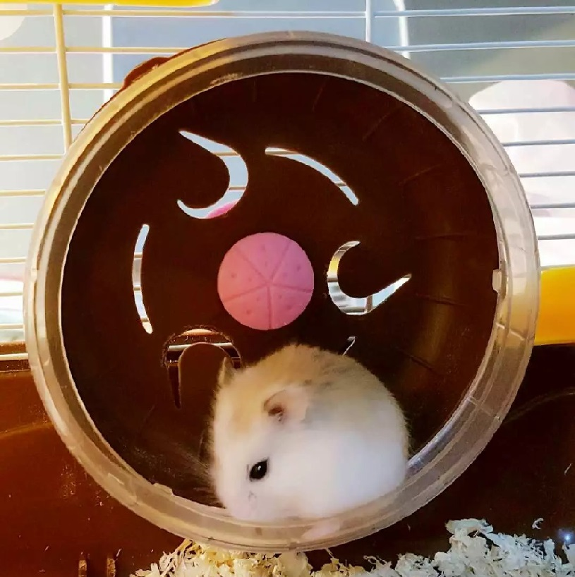
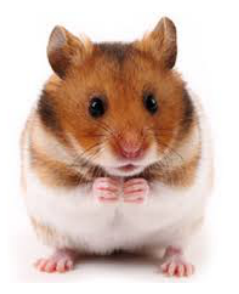
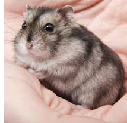
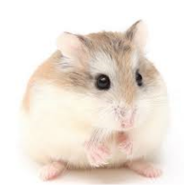

ABOUT HAMSTERS
My Pet
I had pets like hamster, Brazilian turtle, cat and dog, but hamster is my favorite. Here is the reason.
My parents usually sent my cat and dog to my aunt's house when the semester starts. And I would take them back when vacation begins, cause I'm the only one who have time to take care of pets in my family. So only hamster stays with me every day.
My pet is a Roborovski hamster. Her name is Durian flow cow horn bread.She is pudding color and the size of half of my hand.
I got her when she was 1 month's old, and she lived for 2 and a half years.

.
.
Intro
There are lots of subspecises of hamster.
Here are pictures of 3 most common subspecises as pets.
.
· Syrian hamsters

· Russian dwarf hamsters

· Robworovski hamsters

.
Habit
Adult Syrian hamsters are approximately 6 to 8 inches (15 to 20 centimeters) in length, and weigh 6 to 7 ounces (180 to 210 grams). Most other varieties of hamsters are slightly smaller and weigh less. Hamsters kept as pets may live from 18 months to 3 years.A unique feature of hamsters is the outpouching of the checks on both sides of the mouth that extends along the sides of the head and neck all the way back to the shoulders. In the wild, these large pouches allow hamsters to gather food during foraging trips and then carry the food back to their nest for consumption later. Pet owners who suddenly see a fully distended pouch for the first time may fear their pet has some sort of fast-growing tumor or swelling.
Another unusual characteristic of hamsters is paired glands in the skin over the flanks. These glands appear as dark spots within the hair coat. They are much more obvious in males than in females. Hamsters use these glands to mark their territory. The glands also play a role in sexual behavior.Most of the Syrian hamsters sold as pets originated in the Middle East or southeastern Europe. In their native environment, they live in dens beneath the ground where they store food and nest. They forage for food regularly, storing their finds in their pouches until they can carry it back to their dens. Most of the hamsters sold as pets today are the descendants of 3 littermates tamed in 1930.
.
.
Cite
MSD MANUAL - Veterinary Manual https://www.msdvetmanual.com/all-other-pets/hamsters/introduction-to-hamsters